1 · 프로필 교환 요청
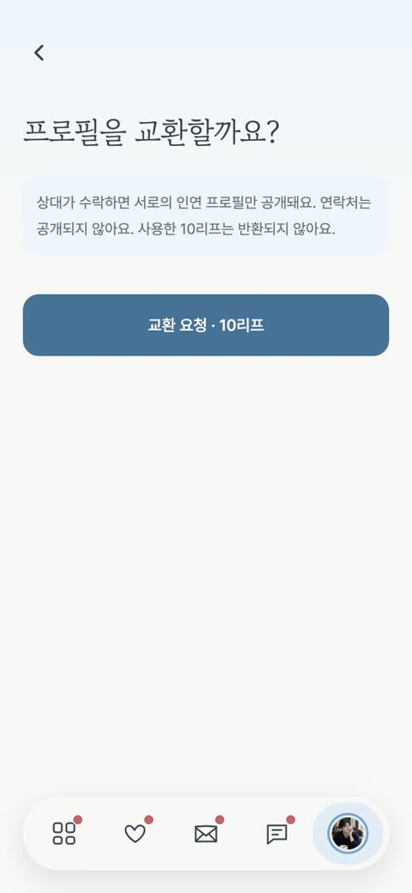
before→
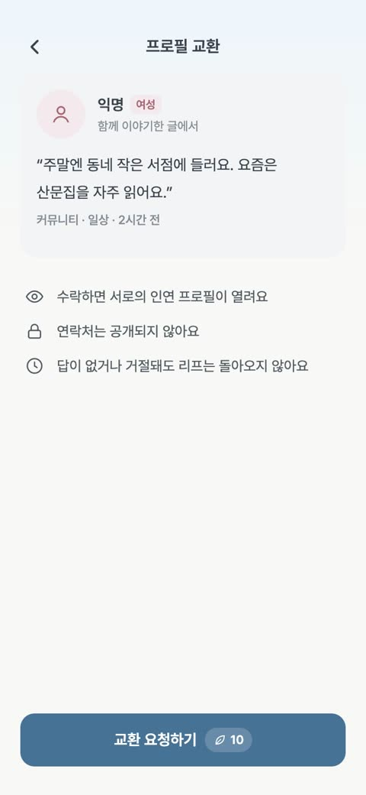
after
- 누구에게 보내는지 먼저 보여요. 익명 · 성별과 함께 이야기한 글 한 줄이에요.
- 회색 상자 문단은 아이콘 세 줄로 나눴어요. 무엇이 열리는지, 연락처는 비공개, 리프는 돌아오지 않는다는 것.
- 버튼은 아래에 붙였어요. "교환 요청하기"에 리프 10 칩을 달아 편지 보내기 버튼과 같은 모양이에요.
2 · 인연 공개
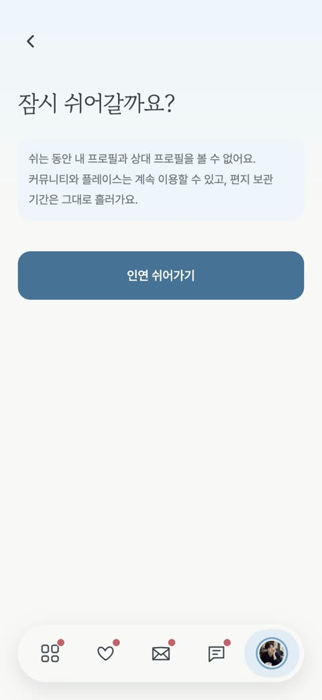
before→
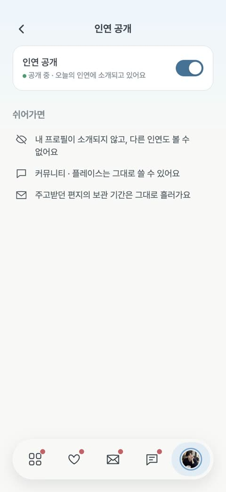
after공개 중
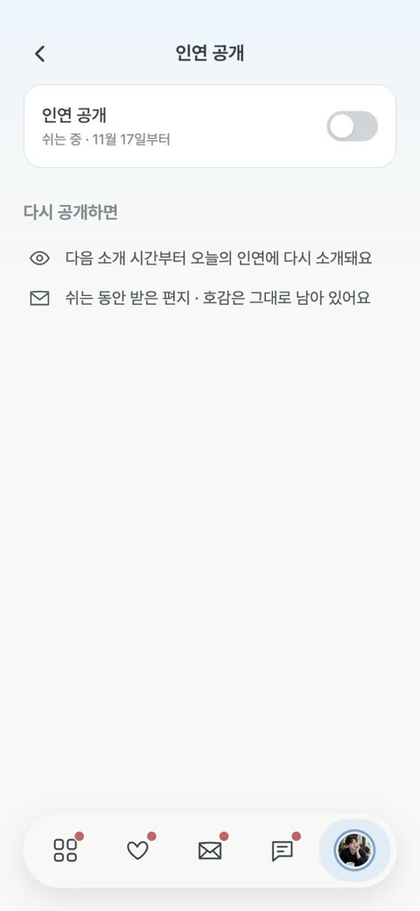
after쉬는 중
- 맨 위에 지금 상태와 스위치를 두었어요. 공개 중(초록 점) · 쉬는 중(날짜).
- "잠시 쉬어갈까요?" 큰 제목과 버튼 대신, 끄면 무엇이 달라지는지 아이콘 줄로 보여요. 스위치를 끌 때는 확인 시트를 한 번 띄울 생각이에요.
3 · 지인 차단
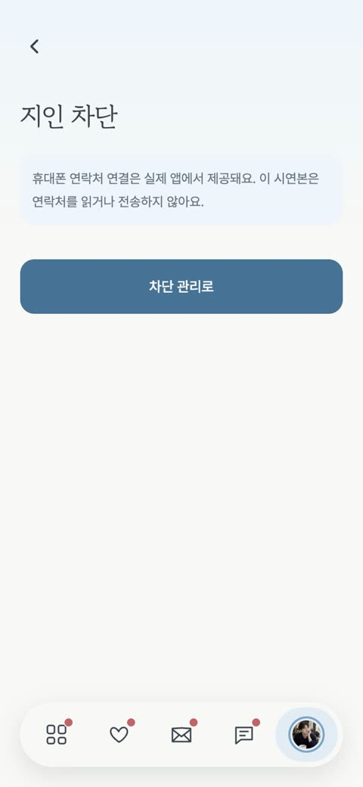
before→
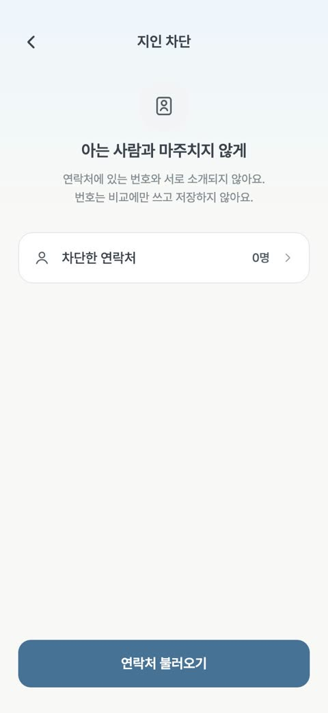
after
- "시연본은 연락처를 읽지 않아요" 덧글 대신 무엇을 해 주는 기능인지 한 줄로 적었어요.
- 차단 목록(0명)을 줄로 보여 주고, 아래에 "연락처 불러오기" 버튼이에요. 시연에서는 누르면 알림 한 줄만 떠요.
4 · 친구 초대
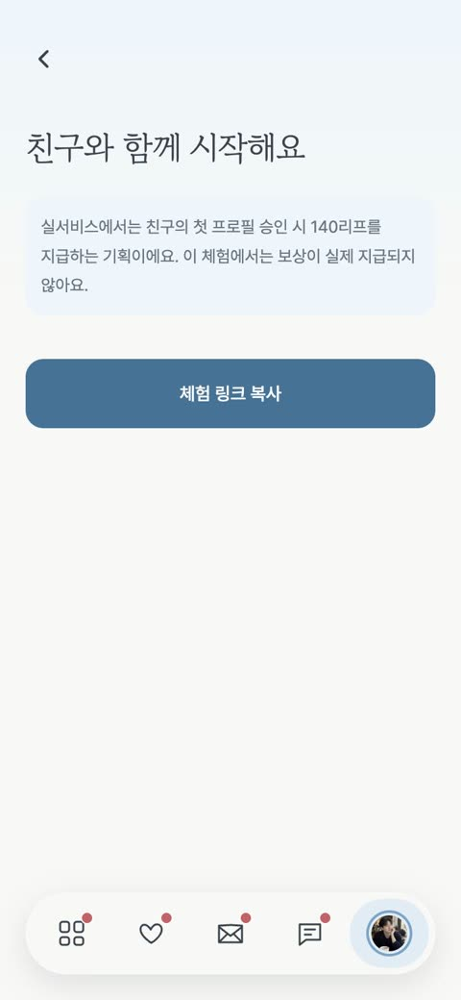
before→
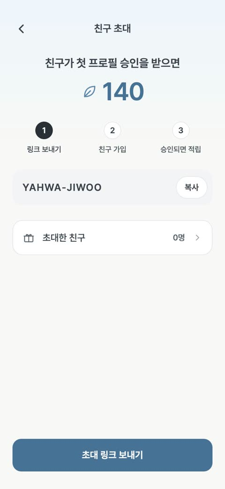
after
- 받을 리프 140을 크게 하늘색으로 보여 줘요. 무료 리프 받기 화면과 같은 색이에요.
- 링크 보내기 → 친구 가입 → 승인되면 적립, 세 단계를 보여 주고 초대 코드 복사 · 초대한 친구 수를 더했어요. "실제 지급되지 않아요" 덧글은 뺐어요.
5 · 배지 · 인증
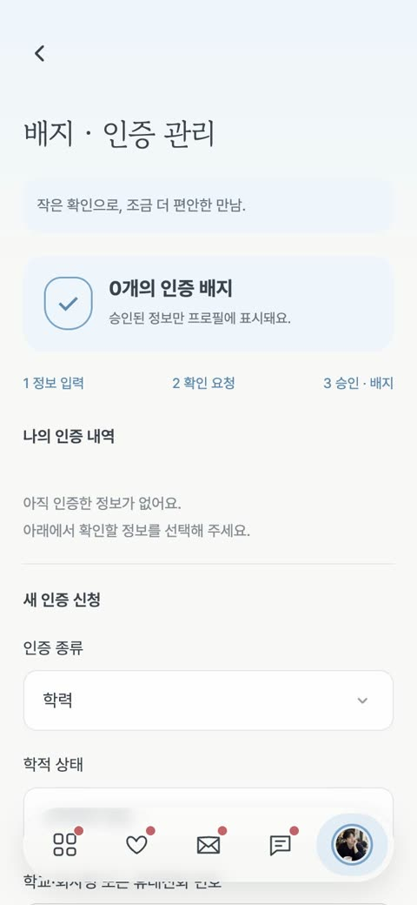
before→
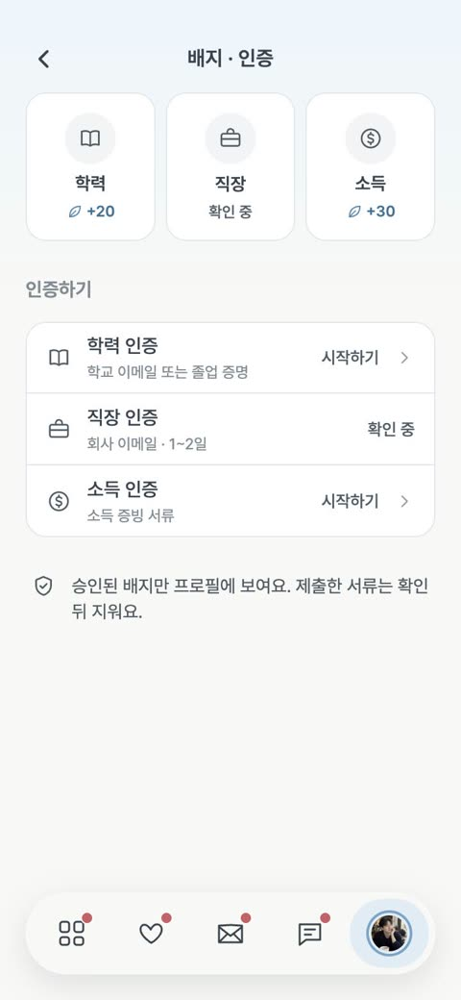
after배지 목록
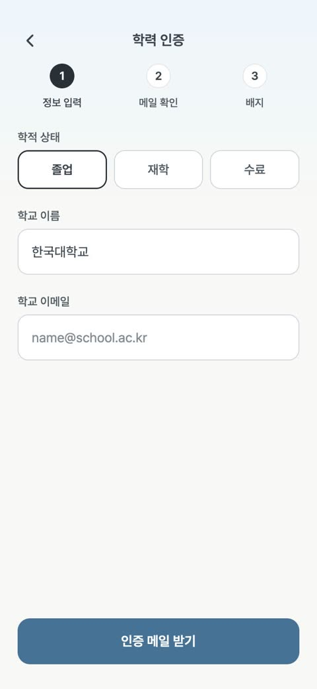
after학력 인증 들어가면
- 첫 화면은 배지 세 칸(학력 · 직장 · 소득)으로 바꿨어요. 받을 리프(+20 · +30)나 "확인 중" 상태가 칸마다 보여요. 아래는 인증 종류별 줄이에요.
- 긴 입력 양식은 한 단계 안쪽(예: 학력 인증)으로 옮겼어요. 흩어져 있던 "1 정보 입력 · 2 확인 · 3 배지"는 숫자 동그라미 단계로 묶었어요.
- 아래 시연 안내 덧글은 "승인된 배지만 프로필에 보여요" 한 줄로 줄였어요.
6 · 머리 모양만 맞춘 화면
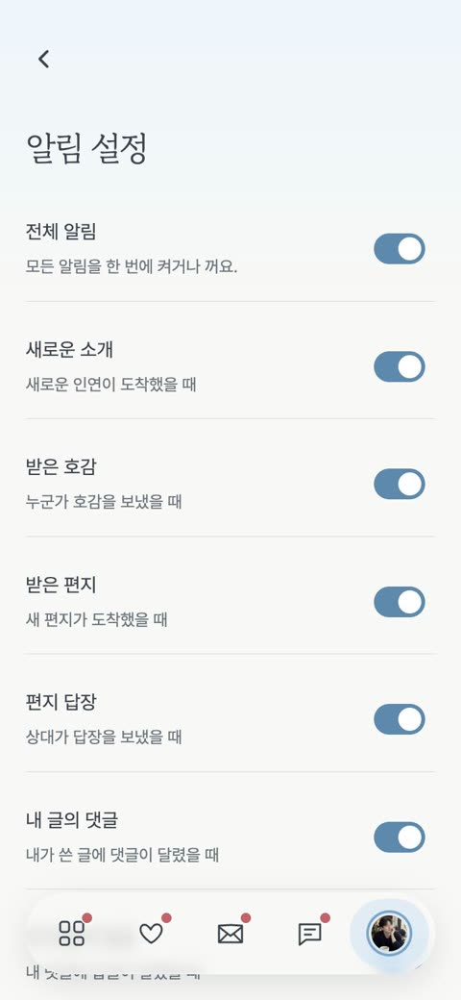
before알림 설정→
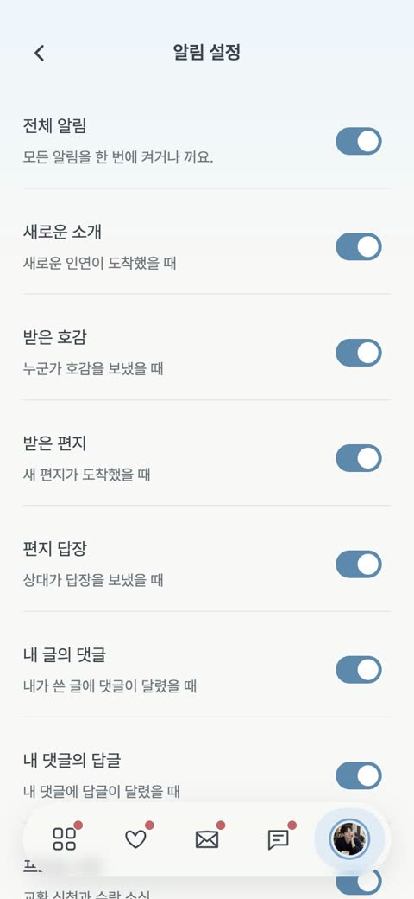
after
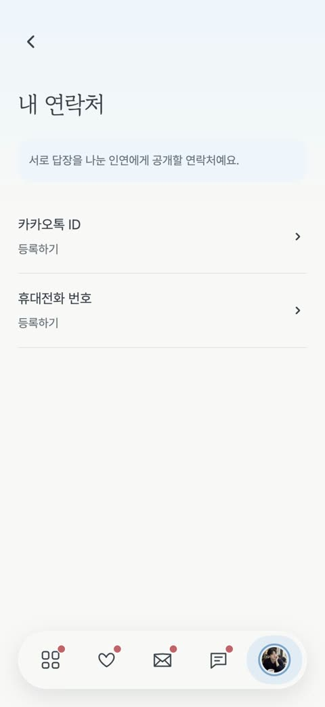
before내 연락처→
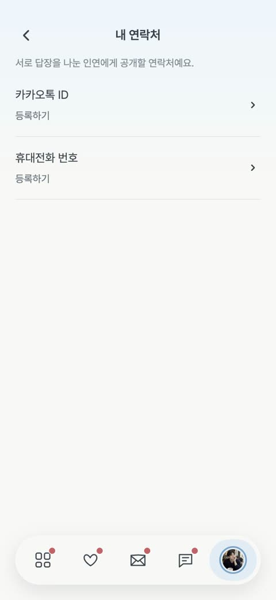
after
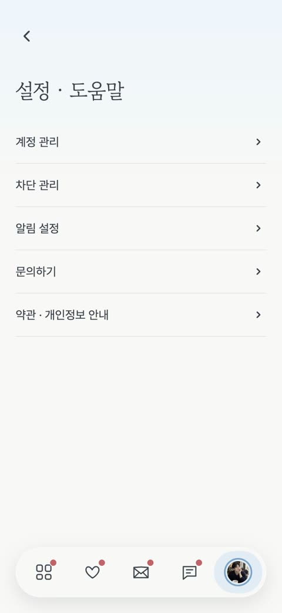
before설정 · 도움말→
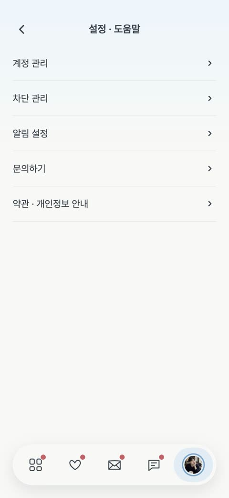
after
- 큰 명조 제목을 빼고 가운데 제목 머리 줄로 바꿨어요. 내용이 한 줄 위에서 시작해요.
- 같은 규칙을 매장 포인트 내역 · 차단 관리 · 계정 관리 같은 나머지 안쪽 화면에도 똑같이 적용해요.
- 내 연락처의 회색 안내 상자는 회색 글 한 줄로 바꿨어요.